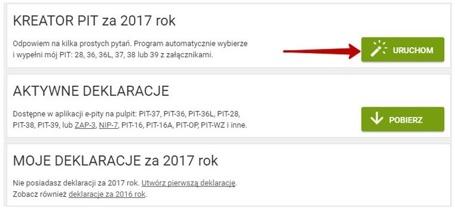
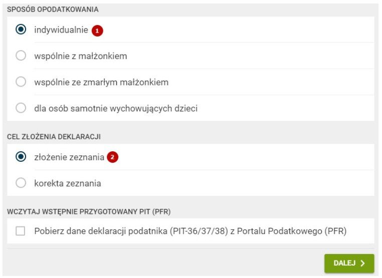
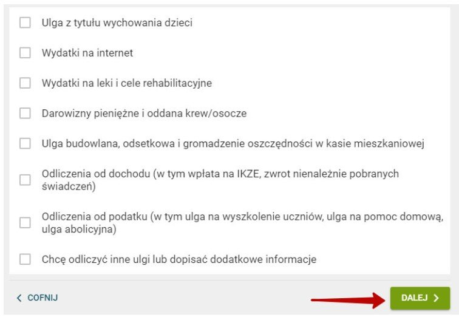
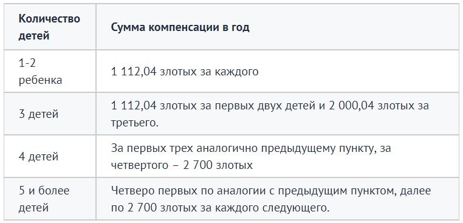

Complete Guide To Completing Pit-37 And Pit-11 In Poland 2024
PIT-37 is a tax return required to be filed by every taxpayer in Poland, the purpose of which is to determine the amount of personal income tax (PIT).
Form PIT-11, in turn, is a document that is issued to employees by their employers and contains data on income earned over the past year. This information is necessary to correctly fill out the PIT-37 declaration.
When Should I Fill Out Pit-37?
To complete the PIT-37 tax return for the year 2023, you must do so by May 2, 2024. This is the last day you can submit documents to the IRS to avoid penalties. Those who fail to submit a declaration on time may face financial penalties ranging from 100 to 1200 zlotys.
The obligation to fill out PIT-37 falls on everyone who has permanent residence in Poland or receives income in the country. The list of such income includes:
- Salary from work;
- Profit from business activity;
- Income from rental property;
- Interest;
- Income from transactions with securities;
- Other sources of income.
Poland uses a progressive tax scale, according to which the tax amount increases depending on the amount of income.
Tax rates in 2023 are set as follows:
- Up to PLN 85,528 – 17%;
- From PLN 85,528 to PLN 146,832 – 22%;
- From PLN 146,832 to PLN 260,530 - 24%;
- From 260,530 to 1,073,792 zlotys - 32%;
- More than PLN 1,073,792 – 41%.
What Are Pit-11 And Pit-37?
PIT-11 and PIT-37 are tax forms that reflect an employee's annual income, but serve different purposes.
Form PIT-11 is provided to the Internal Revenue Service by the employer for each employee and may include information about advance tax paid, but may not reflect the exact amount of income earned. The document must be submitted before the beginning of March of the following year, and if the employee worked for several employers, each of them is required to submit PIT-11 for him.
Unlike PIT-11, Form PIT-37 is submitted by the employees themselves and contains information about income earned and taxes paid for the year. This declaration serves as the basis for the government to refund part of the taxes if the employee is entitled to tax deductions.
Amount Of Tax Paid On Salary
Poland has a system of tax thresholds that determines the amount of tax depending on annual income:
For incomes up to PLN 85,528, a tax of 18% is applied, from which PLN 556 is deducted.
For income above this amount, a flat fee of PLN 14,839 is levied, plus 32% tax on amounts exceeding PLN 85,528.
The specified income limit of PLN 85,528 may be adjusted in the next tax year, increasing or decreasing depending on changes in legislation.
How To Fill Out Pit-37?
The document is submitted by the employee before the end of April of the following reporting year. There are two filling options:
Download the form and fill it out manually. Later you send the letter by mail. This option is suitable for those who have been doing this more than once, know all the intricacies of calculations and are confident in their abilities. Please remember that providing false information, even accidentally, is considered a crime in Poland. Therefore, don't take risks.
The second option is to fill out the form online directly in a specialized program. We recommend choosing this step and using the E-pity.pl resource.
So, next we will look at filling out PIT-37 in the program of the E-pity.pl website.
Stage 1. Calculation of PIT-37
We go to the website E-pity.pl. To start filling out online, select the line “uruchom PITy online teraz” in the window. In the pop-up window, click the checkbox to accept the terms of the user agreement.
To fill out PIT-37, you must collect the following documents:
- PIT-11 from the employer
- PIT-8C from other sources of income (for example, from rent, interest on deposits, income from business activities)
- Documentation of expenses that can be deducted from income (for example, educational expenses, medical expenses, charitable expenses)
After collecting the documents, you can begin filling out PIT-37.
Stage 2. Selecting fill
Click on the “Kreator PIT” mode, it is the first in the list, and move on.

In a new window you will see two lists.
Regarding the “Taxation method” list, select “Individual”, since in our case we are considering the filing of PIT by an individual foreigner for himself personally.
The sub-item “Purpose of submission” has two options. If the declaration is submitted for the first time, you must select the first item “zlozenie zeznania”. If you are submitting adjustments to an existing declaration, you must select the second item “korUniversalna”. In our case, we click on the first item.

Stage 3. Entering personal information
Necessity, I would like to take the PIT-11 that was submitted by the employer and transfer all the information from there to the “Personal Information” section. The information in the two documents must be identical.
Stage 4. Tax revenues
This is one of the most important sections, so you need to fill it out very carefully. First, we select the basis on which PIT-37 is filled out. In our case, based on PIT-11. Select PIT-11 and click “Next”.
In the new windows there will be columns into which amounts need to be transferred from PIT-11. You should already have it when you fill it out. Do this carefully so as not to make mistakes.
Please note that if you worked on the basis of umova zlezenie or umova o dzelo, check the box “nic nie zostalo zaznaczone”.
If you worked on a practical basis, fill out according to section D of PIT-11.
Stage 5. Your benefits
If you are not eligible for benefits, please skip this page.

But there are employees who are entitled to benefits and, thanks to them, tax deductions will be lower as a result. Who can count on tax benefits?
- Active donors. If you are a blood donor, be sure to clarify this when filing your declaration. You can get good benefits.
- Donations for churches. Depending on the amount of donations and the amount of other assistance provided for the needs of the church, you may be provided with tax benefits. The size is calculated individually.
- Internet. If you have been using the Internet for more than two years in a row, you are entitled to benefits.
- Rehabilitation benefits to pay for medications and other medical rehabilitation for both the taxpayer and the persons he supports
- Benefit for assistance in finding employment. Individuals who employ others, including home care workers, also have tax deductions.
- First house Advantages for the construction of the first residential building in the Republic of Poland. It is possible to recalculate the tax on used building materials.
- Foreign income. Applies to persons residing in Poland and holding Polish citizenship who have received income abroad. This is compensation for taxes paid in the country of income.
To count on any of the benefits, you must provide the basis for receiving it in documentary form. Any information must be supported by a document.
Benefits for underaged children
If parents have minor children or children who have not yet reached 25 years of age but are studying at university, then they can receive a benefit. Another condition is that the family income should not be too high. If there is only one parent in the family, then his annual income should not exceed 56 thousand zlotys. If there are two parents in a family, then their total income should not exceed 112 thousand zlotys.

So, if your income is low and you have young children, feel free to enter this information into the form and receive the benefits you are entitled to.
Stage 6. Charitable contributions
This section does not apply to benefits, you will simply be asked to contribute an amount to charity. It is not big, only 1% of your taxes. But you have the right to decide for yourself whether to agree or refuse. If you don't want to give away your 1%, just click the "Next" button and go to the next window.
Stage 7. Final stage
If you are sure that you filled out everything correctly, you need to save the document in pdf format and print it by clicking on “Wydrukuj”. That’s it, the document has been completed and you can proceed with further activities, namely submitting PIT-37 to the tax authorities.
Direct Submission Of The Declaration
Once the document is formed, it must be submitted to Urzad Skarbowy. There are two options for this:
To submit the declaration in person, you need to print it in two copies. One copy must be taken to the tax office. The inspection address will be indicated on the declaration form. After the specialist accepts the declaration, he will mark your copy and return it to you. This will confirm that you have filed the return. Keep your copy for at least 5 years.
To submit a return online, you need to go to the tax office website. On the website you need to fill out a declaration and provide information about how much taxes you paid last year. If you are filing a return for the first time, you can indicate that you did not pay taxes. After you fill out the declaration, you need to click the “Submit Declaration” button. The declaration will be sent to the tax office.
As soon as the document is sent, you will receive a confirmation letter to the email address you provided. Print the submitted declaration and keep it for at least 5 years.
Submitting A General Pit For A Family
There is the possibility of submitting PIT-37 general for a family. Most often this is done by working spouses or a single parent with a child. To submit a joint declaration, check the box “wspolnie z malzonkiem”, that is, “together with your spouse”
To submit an income tax return together with your spouse, you need to fill out a declaration for one of the spouses, and indicate information about the second spouse as additional information. Then all the income of the spouses is summed up, divided in half and taxes are charged on them.
Why do this? Joint filing aration can be beneficial if one of the spouses earns a lot and the other earns little. In this case, the average family income will not exceed the established thresholds, and the family can save on taxes.
What conditions must be met in order for joint submission of PIT-37 to be possible:
- Spouses must be in a registered marriage for at least the entire reporting tax year;
- Must have joint ownership, real estate;
Other conditions that may be imposed by the voivodeship.
What Happens If You Don’t File A Tax Return Or Miss The Deadline For Filling Out Pit-37?
Failure to pay or late filing a tax return, including Form PIT-37, is a serious offense that is treated with extreme severity by the tax authorities. Depending on the degree of delay and the circumstances of its detection, the consequences may vary.
Voluntary admission of late filing may result in a penalty, the amount of which depends on the taxes owed;
For a slight delay, a fine of several hundred zlotys may be imposed;
If the fact of non-filing was discovered by the tax service and a decision was made to conceal it, an investigation process will begin, which may result in legal proceedings. In this case, the consequences could include a significant fine, deportation or even imprisonment. If you find yourself in this situation, it is better to cooperate with the tax authorities and pay all fines, which may mitigate the possible punishment.